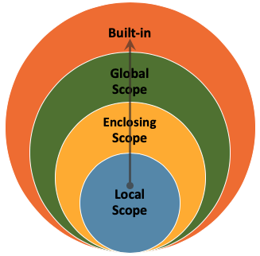

def check_even(number):
if number % 2 == 0:
return True
return False
print(check_even(5))
print(check_even(8))False
TrueWhen you create a variable or define a function, it is not available everywhere in your program. Scope refers to the region of your code where a particular name (variable, function, etc.) can be accessed.
Python organises scope into four layers, from innermost to outermost:
| Layer | What lives here | Example |
|---|---|---|
| Local | Variables defined inside the current function | y = 5 inside a function |
| Enclosing | Variables in a surrounding (outer) function | An outer function’s variable accessed by a nested function |
| Global | Variables defined at the top level of a script or module | x = 10 outside any function |
| Built-in | Names that Python provides automatically | print(), len(), range() |

When you use a name in your code, Python looks it up in this order:
Python stops as soon as it finds a match. If no scope contains the name, you get a NameError.
The local scope is the innermost scope, typically within a function. Variables defined inside a function are accessible only within that function.
When one function is defined inside another, the inner function can access variables from the outer function. Those outer-function variables live in the enclosing scope.
The global scope is the outermost scope of your script. Variables defined at this level are accessible from anywhere in the code, including inside functions.
This is the highest level of scope. It includes all the names that are always available when you run a Python program — the built-in functions, exceptions, and objects that are part of the language itself. You do not need to import anything to use them. We have already learned some built-in functions, such as print() and len().
return inside an if ClauseWhen return is used inside an if clause, the function returns a value and stops executing as soon as the condition is met.
def check_even(number):
if number % 2 == 0:
return True
return False
print(check_even(5))
print(check_even(8))False
TrueIf number is even, the function returns True and exits immediately. If number is not even, it continues to the next line (return False) and then exits.
return inside a for LoopWhen return is used inside a for loop, the function exits as soon as return is reached — the remaining iterations are skipped.
def find_element(sequence, target):
for item in sequence:
if item == target:
return True
return False
seq = [1, 2, 3, 4, 5, 6]
print(find_element(seq, 5))
print(find_element(seq, 8))True
FalseIf the target is found in the sequence, the function returns True and exits the loop and the function. If the loop completes without finding the target, it returns False.
Using return inside loops and conditionals is a way to exit a function early when a specific condition is met. Design your functions carefully to make sure they return the correct value in every case.
Example. Write a Python function is_prime(n) that checks if a given number n is prime.
def is_prime(number):
# Loop through all numbers lower than `number`
for x in range(2, number):
if number % x == 0:
# If the remainder is 0, then the number is not prime
# Using return inside a loop finishes the whole function
return False
# If the loop finishes, the number is prime
return True
print(is_prime(3))
print(is_prime(11))
print(is_prime(4))True
True
FalseConsider the following code. The variable x is global (defined outside any function), and print is a built-in function.
x = 10 # Global variable
print(x) # Built-in function10Inside a function, we can create local variables and also access global ones:
def example_function():
y = 5 # Local variable
z = 2 * x # Accessing the global variable `x`
print(y) # Accessing the local variableexample_function()5However, a local variable does not exist outside its function:
# Trying to access `y` here fails because we are outside the function
print(y)NameError: name 'y' is not definedExample. Before running the code below, think about what you expect to happen with the variable x when we call the modify_variable function. Will its value change? Why or why not?
x = 5
def modify_variable(y):
x = 10
return y + x
result = modify_variable(7)
print(result)17There are two variables named x. The global x is set to 5, while the x inside modify_variable is set to 10. When we call modify_variable(7), it returns 7 + 10, which is 17. The global x is unchanged.
Variable shadowing happens when a function defines a variable with the same name as a variable in the global scope. In the example above, the local x shadows the global x.
Variable shadowing is not necessarily problematic, but it is better practice to use unique variable names to avoid confusion.
Be careful with variable and function names! Using a function name as a variable will overwrite it.
# Define `square_root` as a function
def square_root(x):
return x ** (1 / 2)square_root = square_root(16)
# Now `square_root` refers to the number 4.0
# We have lost our `square_root` function!# What happens when we try to call the function now?
print(square_root(9))TypeError: 'float' object is not callable